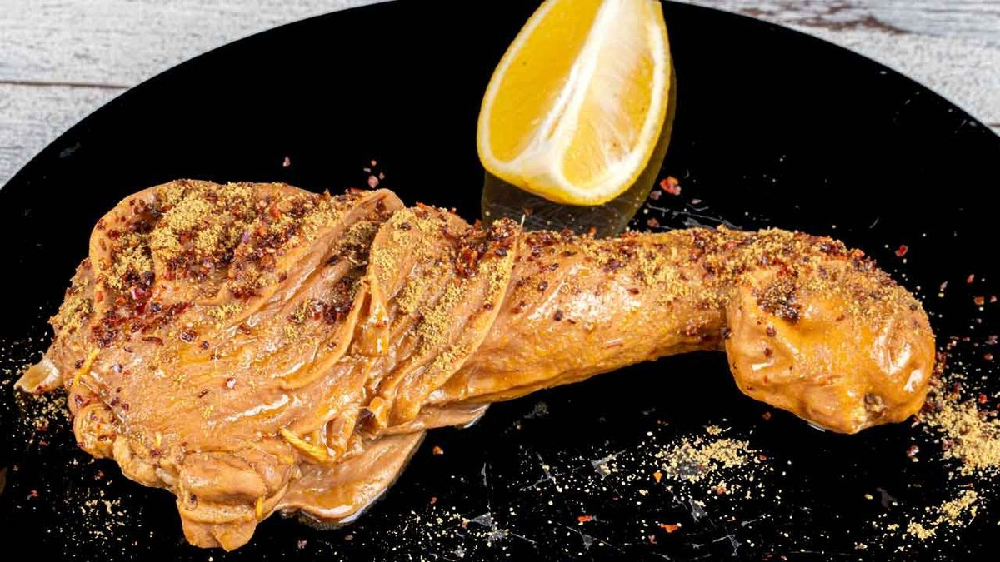
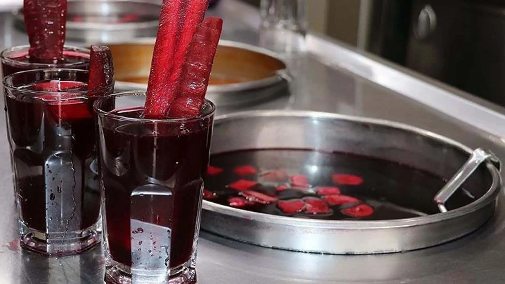
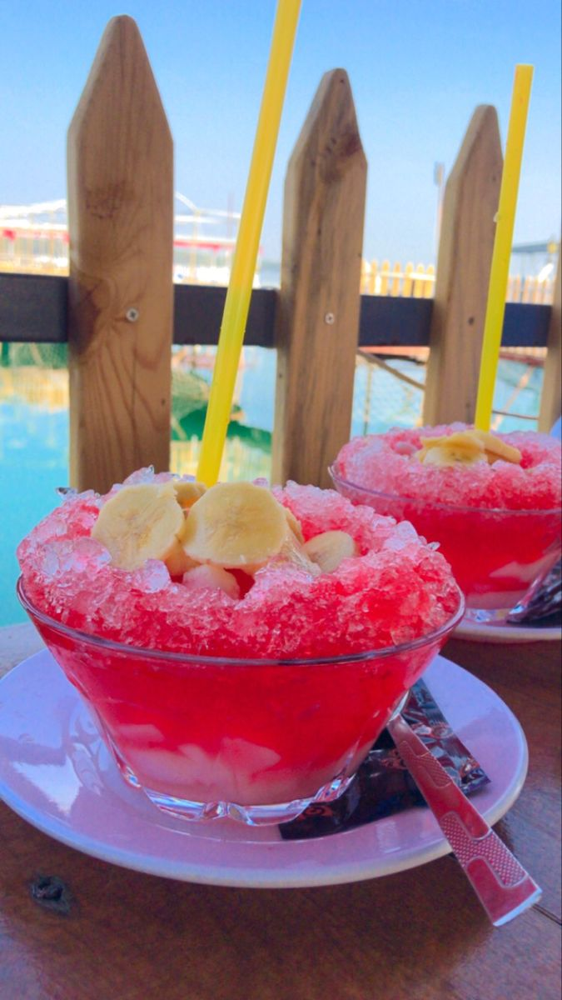

Adana Kebabı, sadece bir yemek değil, coğrafi işaretle tescillenmiş bir sanattır. Bu lezzetin sırrı, kullanılan etin kalitesinden, ustaların zanaatkarlığına ve doğru pişirme tekniğine dayanır. Etin zırhta çekilmesi, kuyruk yağı ile harmanlanması ve özel baharatlarla tatlandırılmasıyla ortaya çıkan bu kebap, Adana'nın kültürel kimliğinin ayrılmaz bir parçasıdır. Gelin, bu benzersiz lezzetin tüm hikayesini keşfedin.

Şırdan, Adana'nın gece hayatının, sokak kültürünün ve cesur mutfağının en belirgin simgesidir. Kuzunun dört midesinden biri olan şırdanın titizlikle temizlenip, pirinç, baharat ve salça ile hazırlanan özel bir harçla doldurulmasıyla yapılır. Görünüşü ne kadar alışılmadık olsa da, tadına bakan herkesi kendine hayran bırakan bu lezzet, üzerine serpilen bol kimyonla birlikte Adana deneyiminin taç noktasıdır. Şırdan, sadece bir yemek değil, bir yaşam tarzıdır.

Şalgam Suyu, Adana'nın meşhur kebaplarının ve baharatlı lezzetlerinin yanında tüketilen, coğrafi işaretle tescillenmiş geleneksel bir fermente içecektir. Başta mor havuç olmak üzere, şalgam turpu ve bulgur mayası kullanılarak uzun ve titiz bir fermentasyon süreciyle hazırlanır.

Adana sıcağında serinlemenin en tatlı yoludur Bici Bici. Ana maddesi olan nişastanın özel bir teknikle hazırlanmasıyla elde edilen jelimsi yapısı, buzun üzerinde şerbetle birleştiğinde benzersiz bir lezzet sunar. Bici Bici'nin olmazsa olmazları, üzerine bolca serpilen pudra şekeri ve taze meyve dilimleridir.
Şehit Kansu Küçük Ateş Mah., Yunus Emre Cad. No:8, 80750
Kadirli/Osmaniye
kadirlimyo@osmaniye.edu.tr
Samed Koç |